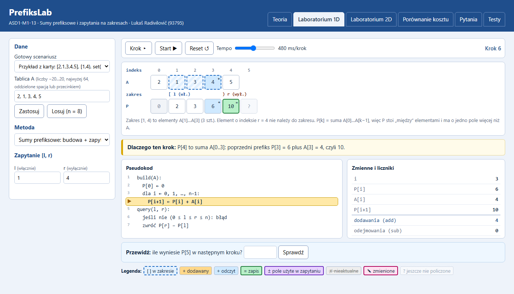
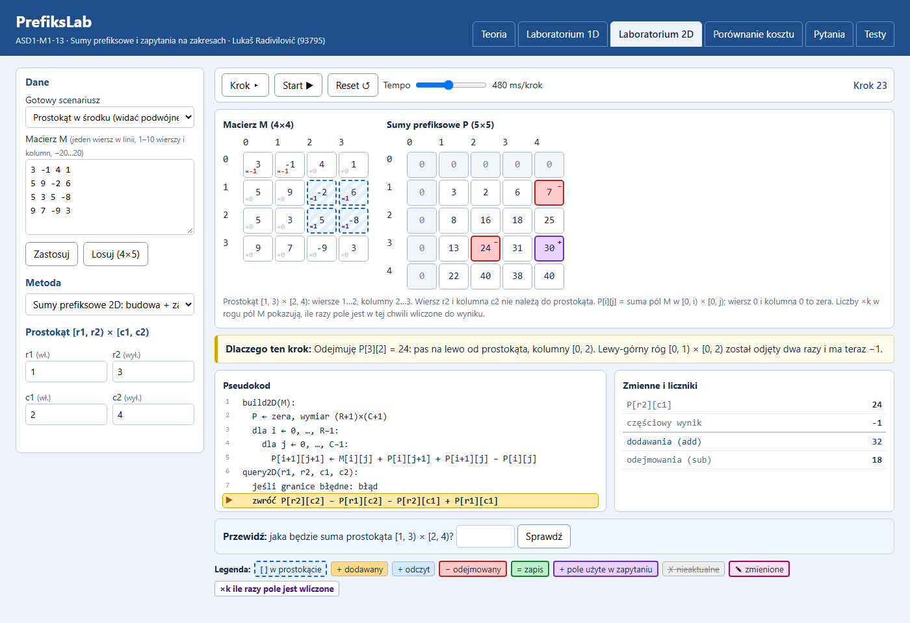

| Autor | Lukaš Radivilovič |
| Nr albumu | 93795 |
| Przedmiot | Algorytmy i struktury danych I |
| Rok akademicki | 2026/2027, semestr I |
| Data oddania | 26.10.2026 |
| Repozytorium | GitHub, link w polu „Linki” w Dzienniku |
Dostajemy tablicę liczb i wiele pytań o sumę jakiegoś fragmentu. Najprościej za każdym razem dodać elementy w pętli, ale wtedy każde pytanie kosztuje tyle, ile elementów ma zakres. Sumy prefiksowe odwracają to: płacimy raz za przygotowanie tablicy pomocniczej, a potem każde pytanie to jedno odejmowanie. To samo działa dla prostokątów w macierzy, tylko wzór jest trochę ciekawszy.
Chciałem zbudować laboratorium, w którym obie drogi da się obejrzeć krok po kroku na własnych danych i policzyć, ile naprawdę kosztują. Nie wystarczy napisać „O(1) zamiast O(n)”, bo dla krótkiej tablicy i jednego pytania przygotowanie wcale się nie opłaca. Aplikacja to pokazuje na liczbach.
Student pierwszego roku, który zna pętle i tablice, ale nie spotkał się jeszcze z sumami prefiksowymi. Po pracy z aplikacją powinien umieć: zbudować P na kartce, policzyć sumę zakresu jako P[r] − P[l], wyjaśnić, dlaczego w 2D trzeba dodać z powrotem lewy-górny róg, i ocenić, kiedy przygotowanie się zwraca.
| Wymaganie z karty | Gdzie w aplikacji | Stan |
|---|---|---|
| Sumowanie bez przygotowania (1D i 2D) | Laboratoria, metoda 1 | zrobione |
| Sumy prefiksowe 1D z zerem na początku, suma [l, r) = P[r] − P[l] | Laboratorium 1D | zrobione |
| Sumy prefiksowe 2D z zerowym wierszem i kolumną, zapytanie z 4 pól | Laboratorium 2D | zrobione |
| set(i, x) i set(i, j, x) z odbudową sum | Laboratoria, metoda 3 | zrobione |
| Dwa widoki z edycją danych i wyborem zakresu, oznaczone granice wł./wył. | Laboratorium 1D i 2D | zrobione |
| Krok, Start/Pauza, Reset, tempo; zmiana danych = nowy przebieg | pasek sterowania | zrobione |
| Stan, aktywne elementy, zmienne, wiersz pseudokodu, przyczyna kroku | Laboratoria | zrobione |
| Co najmniej 3 gotowe scenariusze (jest 6 + 6) | lista „Gotowy scenariusz” | zrobione |
| 3 pytania z odpowiedzią i wyjaśnieniem, jedno o aktualnym stanie (jest 5) | Pytania, pole „Przewidź” | zrobione |
| Porównanie: n = 8, 32, 64; q = 1, 10, 100; macierze 3×3, 6×6, 10×10 | Porównanie kosztu | zrobione |
| Co najmniej 8 testów, w tym 2 stany pośrednie (jest 24, w tym 4) | Testy, node tests/run-tests.js | zrobione |
| Legenda i oznaczenia inne niż kolor (znaki +, −, =, ✗, ✎, ?, ×k, ramki) | pod wizualizacją | zrobione |
Startuję od s = 0 i dla każdego i od l do r − 1 robię s = s + A[i]. W 2D są dwie zagnieżdżone pętle po wierszach r1…r2−1 i kolumnach c1…c2−1. Metoda nie potrzebuje żadnej pamięci poza s, a zmiana danych jest darmowa, bo nic nie trzeba aktualizować. Używam jej też jako punktu odniesienia: jeśli sumy prefiksowe dają inny wynik niż ta pętla, to błąd jest w prefiksach. W podręcznikach takie rozwiązanie nazywa się często algorytmem naiwnym; ja trzymam się nazwy z karty: metoda bezpośrednia.
build(A): P[0] ← 0; dla i = 0 … n−1: P[i+1] ← P[i] + A[i] query(l, r): jeśli nie (0 ≤ l ≤ r ≤ n) → błąd; zwróć P[r] − P[l]
P[k] to suma pierwszych k elementów, czyli A[0] + … + A[k−1]. Tablica P ma n + 1 pól, a P[0] = 0 odpowiada pustemu prefiksowi. Dzięki temu zerowemu polu wzór P[r] − P[l] działa także dla l = 0 i dla pustego zakresu (l = r daje 0) bez żadnych wyjątków w kodzie. Dla przykładu z karty A = [2, 1, 3, 4, 5] dostaję P = [0, 2, 3, 6, 10, 15], a sum(1, 4) = P[4] − P[1] = 10 − 2 = 8.
build2D(M): P ← zera (R+1)×(C+1) dla i, j: P[i+1][j+1] ← M[i][j] + P[i][j+1] + P[i+1][j] − P[i][j] query2D(r1, r2, c1, c2): zwróć P[r2][c2] − P[r1][c2] − P[r2][c1] + P[r1][c1]
P[i][j] to suma prostokąta [0, i) × [0, j), czyli wszystkiego nad i na lewo od rogu (i, j). Przy budowie biorę prefiks z góry i prefiks z lewej. Oba zawierają wspólny obszar P[i][j], więc po dodaniu jest on liczony dwa razy i raz go odejmuję.
Przy zapytaniu jest odwrotnie. P[r2][c2] obejmuje za dużo: oprócz prostokąta także pas nad nim i pas na lewo od niego. Odejmuję oba pasy, ale lewy-górny róg [0, r1) × [0, c1) należy do każdego z nich, więc znika dwa razy. Muszę go raz dodać. W aplikacji widać to na polach macierzy jako licznik ×k: po trzecim kroku róg ma ×−1, po czwartym ×0, a pola prostokąta ×1. Dla przykładu z karty M = [[1,2,3],[4,5,6]] i prostokąta [0, 2) × [1, 3): 21 − 0 − 5 + 0 = 16.
set(i, x) wpisuje x do A[i]. Od tej chwili P[i+1], …, P[n] zawierają starą wartość, więc są złe. Klasa PrefixArray trzyma numer wersji danych i numer wersji, dla której zbudowano P. set zwiększa wersję i od razu odbudowuje P, a sum() sprawdza, czy wersje się zgadzają, i w przeciwnym razie rzuca wyjątek. W ten sposób nie da się przez pomyłkę użyć nieaktualnych sum. W 2D nieaktualne są pola P[a][b] dla a > i oraz b > j. W przykładzie z karty po set(2, 5) mam P = [0, 2, 3, 8, 12, 17] i sum(1, 4) = 10.
Metoda bezpośrednia, gdy zapytań jest mało albo dane zmieniają się prawie przy każdym zapytaniu. Prefiksy, gdy dane są stałe lub zmieniają się rzadko, a zapytań jest dużo. Prefiksy działają tylko dla operacji, które da się „cofnąć” (suma, XOR). Dla minimum czy maksimum sposób z odejmowaniem nie zadziała.
Tablica A to zwykła tablica JavaScriptu (number[]), macierz M to tablica wierszy (number[][]), wszystkie wiersze tej samej długości. Tablica P ma długość n + 1. Macierz P ma wymiar (R + 1) × (C + 1), a jej wiersz 0 i kolumna 0 to zera. Wybrałem zwykłe tablice, bo dostęp po indeksie jest stały, a rozmiary są małe (najwyżej 65 lub 121 liczb). Wartości mieszczą się bezpiecznie w typie number: największa możliwa suma to 10 · 10 · 20 = 2000.
Klasy PrefixArray i PrefixMatrix trzymają razem dane, ich sumy prefiksowe i licznik operacji:
| Pole | Znaczenie |
|---|---|
| A / M | kopia danych użytkownika (konstruktor kopiuje, więc zmiany na zewnątrz nie psują P) |
| P | sumy prefiksowe 1D lub 2D |
| version, builtFor | wersja danych i wersja, dla której zbudowano P; różne wartości oznaczają nieaktualne P |
| cnt = {add, sub} | liczniki dodawań i odejmowań badanego algorytmu |
Każdy krok to obiekt migawki, który oddaje generator. Interfejs rysuje go i nic więcej nie wie o algorytmie.
| Pole migawki | Znaczenie |
|---|---|
| line | numer wiersza pseudokodu, który właśnie się wykonał |
| A, P, Pstale | kopie danych i sum (null = pole jeszcze niepoliczone), znacznik nieaktualnego P |
| hlA, hlP | aktywne pola z rodzajem (odczyt, zapis, +, −, nieaktualne, zmienione) |
| vars, ops | wartości zmiennych (i, P[i], s, …) i liczniki operacji tego przebiegu |
| coef | tylko zapytanie 2D: ile razy każde pole M jest w tej chwili wliczone do wyniku |
| reason, error, result | wyjaśnienie kroku po polsku, komunikat odrzucenia, wynik końcowy |
Koszt mierzę liczbą dodawań i odejmowań (add + sub). Porównania w pętlach, walidacja i animacja nie są liczone.
| Operacja | Dokładna liczba operacji | Czas | Pamięć dodatkowa |
|---|---|---|---|
| suma bezpośrednia [l, r) | r − l dodawań | O(n) | O(1) |
| budowa P 1D | n dodawań | O(n) | n + 1 |
| zapytanie 1D | 1 odejmowanie | O(1) | 0 |
| set 1D + odbudowa | n dodawań | O(n) | n + 1 |
| suma bezpośrednia prostokąta | (r2 − r1)(c2 − c1) dodawań | O(R·C) | O(1) |
| budowa P 2D | 2RC dodawań + RC odejmowań | O(R·C) | (R + 1)(C + 1) |
| zapytanie 2D | 1 dodawanie + 2 odejmowania | O(1) | 0 |
| set 2D + odbudowa | 3RC | O(R·C) | (R + 1)(C + 1) |
Dla q zapytań metoda bezpośrednia wykonuje najwyżej q·n operacji, a prefiksy n + q. Prefiksy wygrywają, gdy suma długości zapytań przekracza n + q.
| Narzędzie | Do czego |
|---|---|
| HTML5 + CSS3 | układ zakładek, siatki komórek tablicy i macierzy, legenda, wydruk |
| JavaScript (ES2020) | algorytmy, generatory kroków (function*), interfejs, wykres SVG |
| Node.js v26 | uruchamianie testów i eksportu wyników z wiersza poleceń |
| Microsoft Edge (tryb headless) | zrzuty ekranu do dokumentacji i druk tej dokumentacji do PDF |
| Git + GitHub | historia zmian i oddanie kodu |
| python-pptx | złożenie pliku prezentacji |
Karta poleca HTML + CSS + JavaScript i to faktycznie pasuje do tematu. Przeglądarka jest na każdym komputerze, więc na obronie wystarczy otworzyć jeden plik. Nie używam żadnej biblioteki interfejsu ani biblioteki do wykresów: komórki to zwykłe elementy div w siatce CSS, a wykres to kilka prostokątów SVG. Mniej rzeczy może się zepsuć i całość działa bez internetu.
Najważniejsza decyzja techniczna to generatory. Funkcja z function* wykonuje prawdziwy algorytm i po każdej ważnej instrukcji zatrzymuje się na yield, oddając migawkę stanu. Przycisk „Krok” wywołuje next(), czyli dosłownie wznawia kod do następnej instrukcji. Nie ma tu nagranej animacji ani ręcznie rozpisanych klatek, czego wymaga karta.
Pliki z algorytmami są napisane w formacie UMD: w przeglądarce rejestrują się jako zmienne globalne (PS, Steps, Compare), a w Node przez module.exports. Dzięki temu testy w terminalu i w zakładce „Testy” sprawdzają dokładnie ten sam kod, którego używa laboratorium.
Aplikacja: otworzyć index.html w przeglądarce (dwuklik), bez instalacji Testy: node tests/run-tests.js → 24 testy, wynik w tests/wyniki-testow.json Porównanie: node tools/export-results.js → docs/wyniki-porownania.json
Aplikacja nie korzysta z sieci, płatnych API ani kont. Jedyny link zewnętrzny to źródło do nauki w zakładce „Teoria”. Parametry w adresie (np. ?tab=lab2&sc2=1&steps2=22) pozwalają otworzyć konkretny scenariusz i przewinąć go o zadaną liczbę kroków. Tak robiłem zrzuty ekranu do tej dokumentacji, żeby pochodziły z prawdziwej aplikacji.
Aplikację sprawdzałem w przeglądarce Microsoft Edge na Windows 11; inne przeglądarki powinny działać, bo kod nie używa niczego niestandardowego, ale tego nie testowałem. Nie testowałem jej na telefonie; układ się zawija przy wąskim oknie, ale tablica 64 elementów wymaga wtedy przewijania w poziomie.
Każda zmiana danych, zakresu, metody albo wybór scenariusza wywołuje Player.reset(): tworzy nowy generator i pokazuje pierwszą migawkę. Stary przebieg jest porzucany, więc nie da się pomieszać kroków z różnych danych. Start uruchamia setInterval z opóźnieniem wybranym suwakiem (60–1600 ms na krok), Pauza go zatrzymuje. Ostatnia migawka ma znacznik done i kończy przebieg.
Generator liczy wartości tym samym wzorem co funkcje z algorithms.js. Test T23 sprawdza, że wynik ostatniej migawki każdego z 6 trybów jest równy wynikowi zwykłej funkcji, a testy T17–T20 sprawdzają konkretne stany pośrednie (np. P = [0, 2, 3, 6, ?, ?] po trzech krokach budowy). Liczniki w migawkach dotyczą tylko obliczeń; kopiowanie tablic do migawek i rysowanie nie zwiększają ich. W porównaniu kosztu w ogóle nie używam generatorów, tylko czystych funkcji z licznikiem.
Historia commitów w repozytorium idzie mniej więcej w tej kolejności.

Rys. 1. Laboratorium 1D, przykład z karty, budowa P w trakcie: właśnie policzone P[4] = P[3] + A[3] = 10. Zakres [1, 4) ma przerywaną ramkę, granica r jest opisana jako wyłączona.

Rys. 2. Laboratorium 2D, scenariusz „Prostokąt w środku”, zapytanie po obu odejmowaniach. Lewy-górny róg ma ×−1, bo odjęto go dwa razy.
Po lewej stronie jest panel danych: gotowy scenariusz, pole na własną tablicę lub macierz (przycisk „Zastosuj” albo Enter), „Losuj”, wybór metody oraz granice zakresu z dopiskami „włącznie” i „wyłącznie”. Dla metody set pojawiają się pola i, x (w 2D i, j, x). Błędne dane, np. 21 albo nierówne wiersze macierzy, dają komunikat pod panelem i nie zmieniają poprzednich danych.
Nad wizualizacją są przyciski Krok, Start/Pauza, Reset i suwak tempa. Pod spodem: pole „Dlaczego ten krok” z wyjaśnieniem i liczbami, pseudokod z podświetlonym i oznaczonym strzałką ▶ wierszem, tabela zmiennych z licznikami add i sub, a także pole „Przewidź”, które pyta o następny prefiks albo wynik zapytania. Każde wyróżnienie ma też znak (+, −, =, ✗, ✎, ?), więc da się z niego korzystać bez rozróżniania kolorów.
Dla każdej długości n generuję jedną losową tablicę (ziarno 2026), a potem q losowych zapytań [l, r). Obie metody dostają dokładnie te same zapytania. Koszt to add + sub; przy prefiksach budowę podaję osobno i razem z zapytaniami. W każdym wierszu wyniki obu metod były identyczne.
| n | q | Bezpośrednio | Budowa P | Zapytania P | Prefiksy razem | Bezpośrednio, najgorszy przypadek (cała tablica) | Taniej |
|---|---|---|---|---|---|---|---|
| 8 | 1 | 5 | 8 | 1 | 9 | 8 | bezpośrednio |
| 8 | 10 | 30 | 8 | 10 | 18 | 80 | prefiksy |
| 8 | 100 | 295 | 8 | 100 | 108 | 800 | prefiksy |
| 32 | 1 | 8 | 32 | 1 | 33 | 32 | bezpośrednio |
| 32 | 10 | 163 | 32 | 10 | 42 | 320 | prefiksy |
| 32 | 100 | 1161 | 32 | 100 | 132 | 3200 | prefiksy |
| 64 | 1 | 42 | 64 | 1 | 65 | 64 | bezpośrednio |
| 64 | 10 | 249 | 64 | 10 | 74 | 640 | prefiksy |
| 64 | 100 | 2245 | 64 | 100 | 164 | 6400 | prefiksy |
Tabela 1. Liczba dodawań i odejmowań dla tablic. Dane z zakładki „Porównanie kosztu” i z docs/wyniki-porownania.json.
Macierze: budowa, jedna zmiana set i jedno zapytanie. Metoda bezpośrednia nie płaci nic za set, tylko przegląda pola prostokąta. Sumy prefiksowe budują P na początku i drugi raz po zmianie.
| Macierz | Prostokąt | Zmiana | Bezpośrednio | Budowa | Odbudowa po set | Zapytanie | Prefiksy razem | Pamięć P |
|---|---|---|---|---|---|---|---|---|
| 3×3 | [0,2)×[0,1) | set(0,1,−11) | 2 | 27 | 27 | 3 | 57 | 16 |
| 3×3 | cała | set(0,1,−11) | 9 | 27 | 27 | 3 | 57 | 16 |
| 6×6 | [2,4)×[4,5) | set(1,2,5) | 2 | 108 | 108 | 3 | 219 | 49 |
| 6×6 | cała | set(1,2,5) | 36 | 108 | 108 | 3 | 219 | 49 |
| 10×10 | [5,10)×[2,6) | set(3,8,13) | 20 | 300 | 300 | 3 | 603 | 121 |
| 10×10 | cała | set(3,8,13) | 100 | 300 | 300 | 3 | 603 | 121 |
Tabela 2. Macierze: jedna zmiana i jedno zapytanie (ziarno 2026).
Przy jednym zapytaniu sumy prefiksowe zawsze przegrywały i inaczej być nie może: budowa i zapytanie to razem n + 1 operacji, a zapytanie bezpośrednie ma najwyżej n dodawań (dla zapytania o całą tablicę różnica wynosi tylko 1). Już przy 10 zapytaniach wygrywały we wszystkich trzech rozmiarach. Dla n = 64 i q = 100 różnica to 2245 do 164, czyli prawie 14 razy mniej operacji, a w najgorszym przypadku 6400 do 164.
Wynik dla macierzy mnie na początku zaskoczył, ale jest logiczny: przy jednej zmianie i jednym zapytaniu prefiksy płacą dwie budowy po 3RC, a zyskują tylko na jednym zapytaniu. Nawet zapytanie o całą macierz 10×10 (100 dodawań) jest tańsze niż 603 operacje prefiksów. Prefiksy mają sens dopiero wtedy, gdy po każdej zmianie przychodzi wiele zapytań.
Testy uruchamiam poleceniem node tests/run-tests.js albo przyciskiem w zakładce „Testy”. Każdy test ma wejście, oczekiwany wynik (porównywany jako tekst JSON), wynik uzyskany i status. Ostatnie uruchomienie: 24 z 24 zaliczonych. Wartości oczekiwane pochodzą z przykładu kontrolnego w karcie albo z ręcznych obliczeń, nie z wyniku programu.
| ID | Co sprawdza | Wejście (skrót) | Oczekiwane | Status |
|---|---|---|---|---|
| T01 | budowa P (karta) | [2,1,3,4,5] | [0,2,3,6,10,15] | OK |
| T02 | sum(1,4) obiema metodami | [2,1,3,4,5] | 8 i 8 | OK |
| T03 | set(2,5), potem sum(1,4) | [2,1,3,4,5] | P=[0,2,3,8,12,17], 10 | OK |
| T04 | prostokąt z karty, obie metody | [[1,2,3],[4,5,6]], [0,2)×[1,3) | 16 i 16 | OK |
| T05 | macierz P z karty | [[1,2,3],[4,5,6]] | [[0,0,0,0],[0,1,3,6],[0,5,12,21]] | OK |
| T06 | pusta tablica | [], [0,0) | P=[0], suma 0 | OK |
| T07 | pusty zakres i cała tablica | [3,3), [0,5) | 0, 15 | OK |
| T08 | liczby ujemne, suma 0 | [−5,5,−20,20,−1] | 0, −20, −15 | OK |
| T09 | zmiana pierwszego i ostatniego | [1,2,3,4], set(0,−20), set(3,20) | 5, −20, 20 | OK |
| T10 | macierz 1×1, pusty prostokąt | [[7]] | 7, 0, 0 | OK |
| T11 | pojedynczy wiersz, cały prostokąt | [[1,−2,3,−4]] | 1, −2 | OK |
| T12 | set w rogach macierzy | [[1,2],[3,4]] | 11, −4, 11 | OK |
| T13 | błędne granice 1D | [3,1), [−1,2), [0,6), [1.5,3) | 4× ValidationError | OK |
| T14 | błędne granice 2D | odwrócone, za duże, bezpośrednia | 4× ValidationError | OK |
| T15 | błędne dane i set | 21, 65 el., 11 wierszy, … | 6× ValidationError | OK |
| T16 | odrzucony set nie psuje danych | [1,2,3], set(3,9) | błąd, suma 6 | OK |
| T17 | stan pośredni: budowa 1D po 3 krokach | [2,1,3,4,5] | [0,2,3,6,?,?] | OK |
| T18 | stan pośredni: budowa 2D po 1. wierszu | [[1,2,3],[4,5,6]] | wiersz 1 = [0,1,3,6], wiersz 2 = ? | OK |
| T19 | stan pośredni: współczynniki ×k | 3×3, [1,3)×[1,3) | róg −1, prostokąt 1 | OK |
| T20 | stan pośredni: P nieaktualne po set | [2,1,3,4,5], set(2,5) | stale = true, potem 10 | OK |
| T21 | liczniki operacji | n = 64, macierz 3×3 | 64, 64, 1, 18+9, 1+2 | OK |
| T22 | losowe dane: prefiksy = bezpośrednio | 500 zapytań 1D + 500 2D | true | OK |
| T23 | wynik kroków = wynik funkcji | 6 trybów | [8,8,10,16,16,13] | OK |
| T24 | kroki zatrzymują się na błędzie | [2,1) | błąd, brak wyniku | OK |
Tabela 3. Zestaw testów (pełne wejścia i wyniki w zakładce „Testy” i w tests/wyniki-testow.json).
Tryb „set + odbudowa” najpierw sprawdzał tylko indeks i nową wartość, a granice zapytania dopiero przy samym zapytaniu, którego w tym trybie nie walidowałem. Przy błędnym zakresie mógł więc policzyć bzdurę z undefined. Dodałem sprawdzenie zakresu przed zmianą danych (w 1D i 2D). Drugi błąd był czysto wizualny: na wykresie najwyższy słupek nachodził na legendę, więc zwiększyłem górny margines.
Sumy prefiksowe działają tak, jak obiecuje teoria, ale porównanie pokazało, że „O(1) na zapytanie” to tylko połowa historii. Przy jednym zapytaniu budowa się nie zwraca. Przy 10 i więcej zapytaniach prefiksy wygrywały w każdym rozmiarze, a przy 100 zapytaniach dla n = 64 wykonały prawie 14 razy mniej operacji. Z kolei w macierzach z jedną zmianą i jednym zapytaniem przegrywały za każdym razem, bo set wymusza pełną odbudowę.
Najwięcej zrozumienia dały mi współczynniki ×k w zapytaniu 2D. Wzór z czterema polami łatwo zapamiętać, ale dopiero gdy widać, że lewy-górny róg ma po dwóch odejmowaniach −1, jasne jest, po co jest ostatnie dodawanie.
Częściowa odbudowa po set, krok wstecz w odtwarzaczu, tryb „wiele zmian i zapytań na zmianę” z wykresem punktu opłacalności. Struktury do częstych zmian (drzewo Fenwicka, drzewo przedziałowe) karta celowo wyklucza, więc mogłyby być osobnym projektem.
Jako narzędzia pomocniczego używałem asystenta AI Claude (Anthropic) w aplikacji Hermes: przy pisaniu i poprawianiu fragmentów kodu, redakcji tekstów oraz składaniu slajdów. Własny wkład: koncepcja aplikacji i sposobu wizualizacji (współczynniki ×k, pole „Przewidź”), definicja liczników i warunków porównania, dobór przypadków testowych, sprawdzenie algorytmów na przykładzie z karty i na danych liczonych ręcznie, dopracowanie wyglądu aplikacji i materiałów, korekta tekstów (m.in. ujednolicenie nazwy „metoda bezpośrednia”) oraz przygotowanie obrony.
Kod sprawdzałem tak: (1) wartości oczekiwane w testach pochodzą z przykładu kontrolnego karty albo z obliczeń ręcznych, a nie z wyniku programu; (2) test T22 porównuje prefiksy z metodą bezpośrednią na 1000 losowych przypadkach; (3) T23 porównuje wynik wykonania krokowego z czystymi funkcjami; (4) zrzuty ekranu z każdego trybu porównałem z wartościami policzonymi ręcznie, m.in. przykład z karty: P = [0, 2, 3, 6, 10, 15], sumy 8 i 10, prostokąt 16. Wszystkie liczby w tej dokumentacji pochodzą z uruchomienia aplikacji i testów.